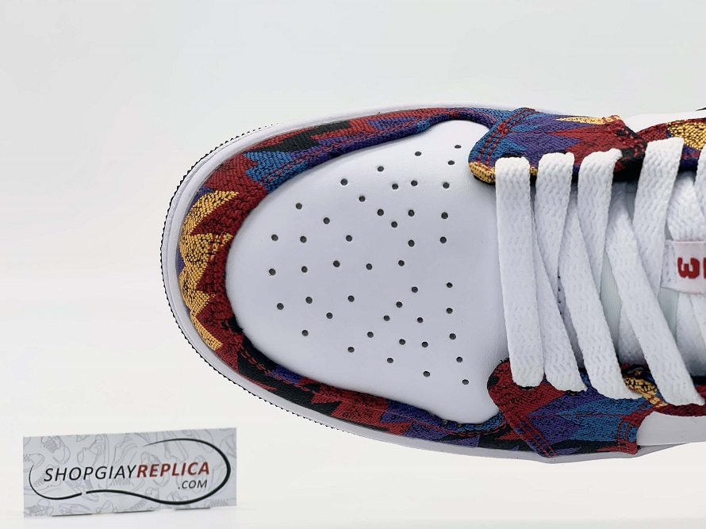
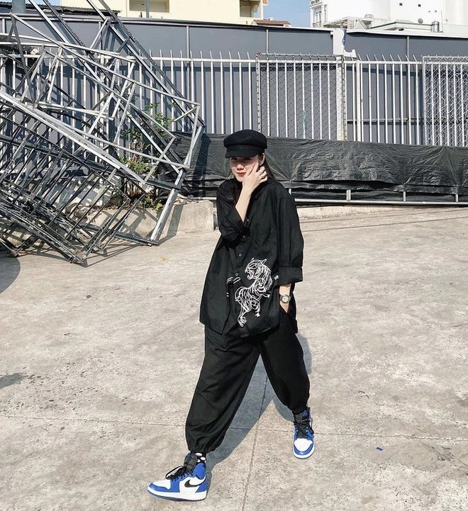
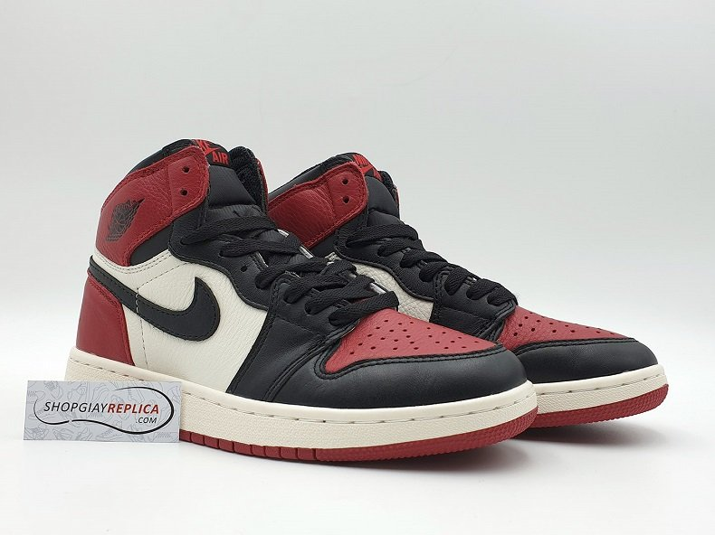
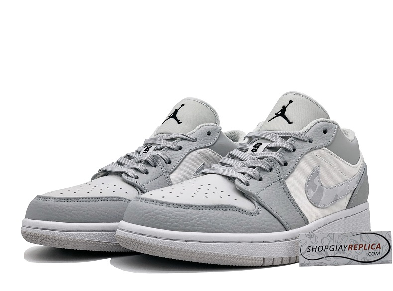

Nike Jordan 1 vẫn là dòng giày kinh điển và được săn đón nhất mọi thời đại. Mỗi lần một phiên bản Jordan mới được trình làng là một lần giới mộ điệu dậy sóng bởi thiết kế phá cách và cá tính khiến ai cũng muốn sở hữu.
Độ hot ngày càng tăng, đồng nghĩa với việc mức giá của Jordan Brand cũng không hề “dễ chịu”. Vậy nên giày Jordan 1 Rep 1:1 hiện đang là một trong những dòng giày sneaker hot trend nhất trên thị trường cũng không có gì quá ngạc nhiên. Những sản phẩm Replica 1:1 luôn đảm bảo những tiêu chí hàng đầu: chất liệu da tốt, thiết kế tỉ mỉ đến từng chi tiết, form giày chuẩn và cực tôn dáng.
Các mẫu giày Jordan 1 là một trong những mặt hàng bán chạy nhất tại Shopgiayreplica. Cùng Shop điểm mặt các sản phẩm hot tại Shop và tìm hiểu lý do sao lại đang hot hit như vậy nhé.
Nike Jordan 1 có gì mà hot đến vậy
Thiết kế "đỉnh của chóp"
Nike Jordan 1 vẫn luôn là thiết kế “đình đám” bậc nhất của thương hiệu Nike. Những đặc trưng “không thể lẫn đi đâu” chính là dấu “swoosh” ở bên hông, logo Nike Air ở lưỡi gà và đặc biệt là logo Air Jordan “Winged Basketball”. Nhìn chung, kiểu dáng của Air Jordan được xem như “ăn đứt” các dòng giày phổ biến hiện nay trên thị trường bởi thiết kế trẻ trung, năng động và mang những tính năng nổi trội.
Cụ thể, Jordan Brand mang bộ đế “Air” trứ danh, bộ đệm cổ chân cứng cáp giúp hạn chế tối đa chấn thương khi hoạt động mạnh. Thêm vào đó, tuỳ vào từng phiên bản mà Nike Jordan sẽ sở hữu những chất liệu khác nhau như da trơn, da nhăn, da Nubuck,… và chúng luôn được xử lý cực kỳ kỹ lưỡng và tỉ mỉ. Air Jordan cũng luôn chú ý đến sự thoải mái nên phần mũi giày luôn được trang bị hệ thống lỗ thoáng khí nhỏ, dày đặc.

Màu sắc đa dạng đọc đáo
Nike Jordan là dòng giày đặc biệt được phối từ nhiều gam màu phong phú, trong đó có những tone màu “độc lạ” khiến ai nhìn vào cũng thích thú. Từng màu lại được cân nhắc kỹ lưỡng và đặt vào từng vị trí phù hợp, tạo nên tổng thể đôi Nike Jordan Rep 11 hài hoà, không rối mắt nhưng cực thu hút.
Tính ứng dụng cao
Đây không đơn giản là giày thể thao thông thường mà bản chất là dòng giày được sản xuất phục vụ tập luyện bộ môn bóng rổ vậy nên nó mang đến tính ứng dụng cực cao.
Nike Jordan với 3 form thông dụng (high – low – mid), màu sắc đa dạng, bất chấp mọi phong cách trang phục khác nhau. Đặc biệt khi phối với những set đồ đậm chất casual sẽ càng tăng thêm độ cá tính và “chất chơi” cho đôi giày, nổi bật được phong cách thời trang của người mang.
Đôi giày được nhiều ngôi sao nổi tiếng lựa chọn
Sức ảnh hưởng của Nike Jordan ngày càng lớn không chỉ vì sự yêu thích từ giới mộ điệu mà còn bởi nó được nhiều ngôi sao nổi tiếng trên thế giới diện từ đời sống hàng ngày đến các sự kiện tầm cỡ.
Ở Việt Nam, “cơn sốt Air Jordan” chưa bao giờ là hết khi nó được loạt sao Vbiz ưu ái mang với tần suất dày đặc, có thể kể đến những cái tên như: Sơn Tùng M-TP với đôi Jordan 1 High “Court Purple” có giá 8 triệu
Phương Ly với JD1 High “Game Royal” (giá khoảng 7 triệu đồng)

Siêu mẫu Ngọc Trinh với Air Jordan 1 High “Univercity Blue” (giá khoảng 1x triệu đồng)
Stylist Hoàng Ku với siêu phẩm Jordan 1 High x Dior phiên bản High với giá khoảng 300 triệu đồng… .
Trong năm 2020, Air Jordan cũng phủ sóng “quen mặt” trên các chương trình đình đám như Rap Viet hay King Of Rap. Điều đó dễ hiểu vì sao nhiều bạn trẻ săn lùng dòng Jordan rep 11 như vậy khi không đủ tiền mua chính hãng.
Các mẫu giày Air Jordan 1 Low-Mid-High tại Shop
Jordan 1 High (Cổ cao)
Jordan 1 cổ cao mang trọn vẹn những tính năng vượt trội nhất của dòng giày này cùng vẻ ngoài năng động, “chuẩn không cần chỉnh” ngay từ cái nhìn đầu tiên. Và dù là cổ cao thì thương hiệu Nike vẫn đảm bảo kim chỉ nam của hãng là sự thoải mái cho người mang chứ không hề bí bách hay làm đau cổ chân.

- Mũi giày: Thiết kế bo tròn, ôm trọn phần ngón chân, tạo nên sự gọn gàng và chắc chắn khi di chuyển. Đồng thời, hệ thống lỗ thoáng khí ở mũi giày sẽ giúp đôi chân của bạn luôn được mát mẻ và dễ chịu.
- Thân giày: Thân giày của JD1 High là sự kết hợp của nhiều bảng màu khác nhau, mỗi bản phối lại mang đến vẻ đẹp khác biệt. Đồng thời, logo Nike được thiết kế kéo dài đến tận gót giày, nhấn mạnh sự đẳng cấp của sản phẩm.
- Cổ giày: Jordan 1 High ghi dấu ấn bởi phần cổ giày cao êm ái, trẻ trung, mang đến sức lôi cuốn khó cưỡng khi phối với bất kỳ trang phục nào, từ nam tính cho đến nữ tính. Thêm vào đó, mỗi đôi JD1 High sẽ có biểu tượng “Winged Basketball” cùng dòng chữ “Air Jordan” sắc nét, vô cùng ấn tượng.
- Lưỡi gà:Với độ rộng, mềm mại, kết hợp với phần cổ cao ôm sát chân, luôn đảm bảo tôn dáng và lên chuẩn form giày. Bạn có thể mang giày theo nhiều kiểu khác nhau mà vẫn cực “trendy” và hợp mốt.
- Đế giày: Đế giày của Nike Jordan High không đồ sộ, thay vào đó là độ đàn hồi và chịu lực cực tốt, đảm bảo an toàn cho mỗi bước đi của bạn.
Jordan 1 Mid
So với những phiên bản “ra là cháy hàng” như Nike Air Jordan 1 Retro High Og ‘Bred Toe’, Nike Air Jordan 1 Retro High Dior,… thì những mẫu Jordan 1 Mid (cổ tầm trung) cũng được ưa chuộng không kém.
Vẫn mang đầy đủ những tính năng ở từng chi tiết, nhưng Jordan 1 Mid lại ghi điểm bởi sự nhỏ gọn hơn khi phần cổ giày chỉ chạm mắt cá chân, phù hợp và tiện lợi khi sử dụng hàng ngày. Hơn nữa, những bản phối màu của JD1 Mid hoàn toàn tương ứng với JD1 High kể cả những màu phối hot.
Vì vậy, nếu bạn nào không muốn trải nghiệm phần cổ cao của JD1 High nhưng vẫn yêu thích thiết kế hút mắt của dòng giày này thì Jordan 1 Mid chính là sự lựa chọn lý tưởng.
Jordan 1 Low (Cổ thấp)
Tương tự, Jordan 1 Low cũng có những điểm sáng về thiết kế giống với JD1 High và Mid. Tuy nhiên, phiên bản này cũng có đôi chút sự khác biệt và có sức hút to lớn với cộng đồng sneakers.

- Cổ giày: Điểm khác rõ ràng ở JD1 Low chính là phần cổ giày thấp dưới mắt cá chân, ôm trọn cổ chân, tạo sự gọn gàng tuyệt đối. Kết hợp với phần lưỡi gà rộng rãi nên đôi giày sẽ không mất đi vẻ retro và phong cách vốn có.
- Biểu tượng “Winged Basketball” không được đặt trên cổ giày như bản High và Mid mà được thêu chắc chắn phía sau gót giày, tạo sự lôi cuốn mới lạ.
Có thể nói, Jordan 1 low đem lại sự nhẹ nhàng, thanh lịch hơn rất nhiều nên sẽ phù hợp hơn khi phối với những bộ đồ trang trọng như vest, quần âu hay những set váy nữ tính.
So sánh giá giày Jordan 1 Rep 1:1 và Auth
Bàn về giá cả của Nike Air Jordan thì đó là câu chuyện “đắt” vô cùng. Giá của một đôi Jordan tuỳ vào từng phiên bản mà dao động từ 3 triệu đến 17 triệu đồng. Thậm chí nhiều mẫu Jordan 1 còn rơi vào tầm 45.000.000 – 50.000.000 đồng là chuyện bình thường.
Ở Việt Nam, để mua được những mẫu Air Jordan chính hãng thì tốt nhất bạn nên đến store của hãng để sắm nha.
Xét trên danh tiếng và chất lượng của Nike Jordan thì quả thật không sai khi đây là một trong những dòng sneaker “đắt đỏ” mà không phải ai cũng có thể mua được, đặc biệt là những bạn học sinh, sinh viên.
Chính vì lẽ đó mà những sản phẩm chuẩn Rep 11, độ hoàn thiện về cả thiết kế lẫn chất da lên đến 98% so với bản chính hãng sẽ là sự lựa chọn phù hợp cho những người nhanh chóng muốn “rước” em Jordan 1 cực đẹp này về nhà.
Tại Shopgiayreplica.com™, các mẫu giày Nike Jordan 1 Rep 1:1 với đầy đủ kiểu dáng mới nhất và những bản phối màu cực hot luôn có sẵn. Cửa hàng chúng tôi cam kết chất lượng, bảo hành, chế độ đổi trả linh hoạt và mang đến cho khách hàng một mức giá hợp lý hơn bao giờ hết.